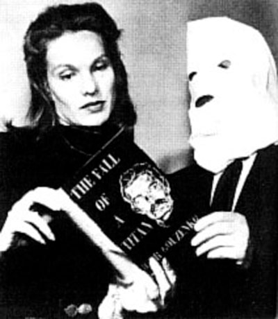

The Cold War was a period of political tension between the United States and the Soviet Union that lasted from the end of World War II until the fall of the Soviet Union in 1991, though some could argue it lived on. It was all about an ideological struggle between communism and capitalism, as well as a military arms race, espionage, and several proxy wars around the world. Despite the lack of direct conflict between the two superpowers, the Cold War had large impacts on global politics, economics, and society, affecting a very many people around the world.
After World War II, Canadian society underwent big changes as the country faced the challenges of rebuilding and restoring its economy. The war had a great impact on Canadian society, causing great pride and patriotism, as well as start of new social programs and policies in reaction to the horrors seen. The country also played a important role in the Cold War, with Canada being part of the NATO alliance and working closely with the United States in countering Soviet influence. This led to political tension at times and increased attention on national security issues. Overall, Canadian society changed significantly after World War II, as it grappled with the challenges of the Cold War and sought to maintain its place in the global community.
One famous example of Canada addressing conflict in its own country during the Cold War was the Gouzenko affair. In 1946, Igor Gouzenko, a Soviet diplomatic official in Ottawa, defected and exposed a secret Soviet spying operation in Canada. The Gouzenko affair sparked an international outcry and led Canada to implement various measures to protect its national security, including the creation of the CSIS in 1987. This was important because Canada addressing its internal conflicts was not voiced enough and caused it to be the grounds for espionage during the Cold War. This event served as a turning point in Canada's history, demonstrating the country's willingness to confront threats from the Soviet Union and other hostile nations, and led to the development of various counter-intelligence strategies aimed at protecting Canada's sovereign interests.
